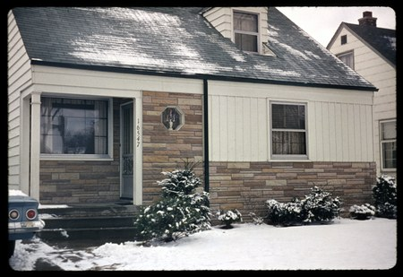
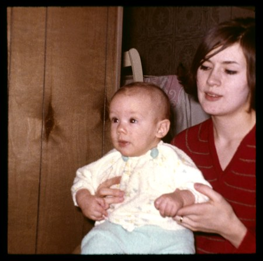
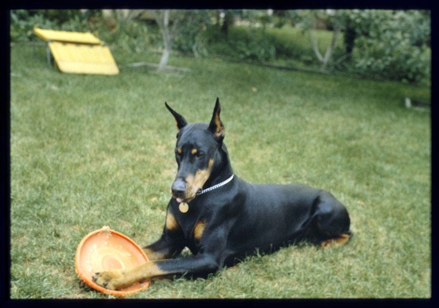
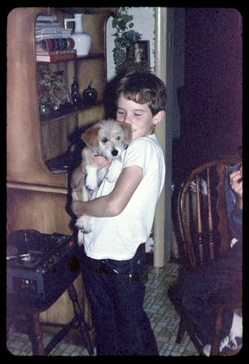
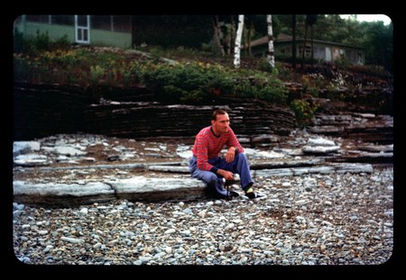
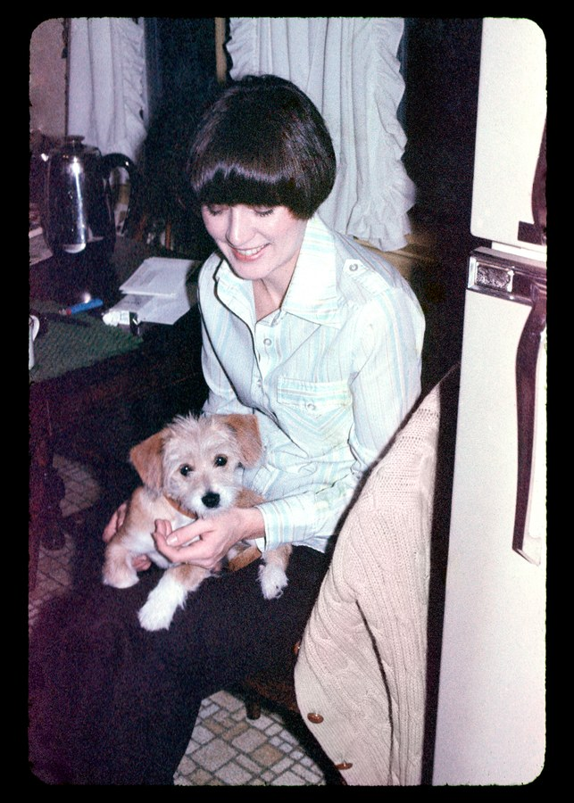
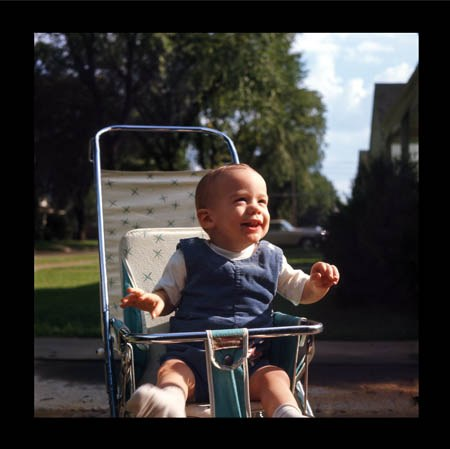

1965-2004, no. 11

1965-2004, no. 186

1965-2004, 4 of 15
1965-2004, 5 of 15
1965-2004, 6 of 15

1965-2004, 7 of 15

1965-2004, 8 of 15

1965-2004, 9 of 15
1965-2004, 10 of 15

1965-2004, 11 of 15

1965-2004, 12 of 15

1965-2004, 13 of 15

1965-2004, 14 of 15
